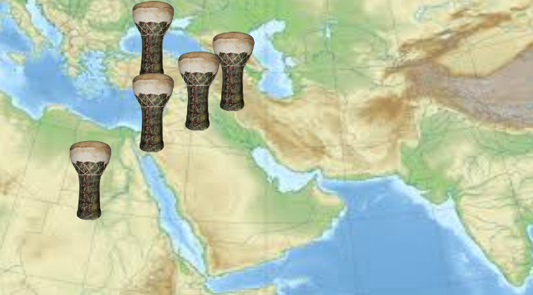

The Darbuka is an instrument from Egypt, similarly shaped to a drum. Its name is from the Arabic term “daraba” meaning “to strike”. Darbukas have roots as far back as 1000 BCE, seen in places like Babylonia.
The Darbuka is cradled in the player’s arms like a football. One hand snaps on the surface on the drum while the other hand strikes the top. The Darbuka is hollow, therefore sound changes as it travels in the inside, Its conical flair at the bottom contributes to the sound. However, if the Darbuka is play upright on a table, it would make a muffled sound.
Click the drums on the right to hear sounds from the Darbuka